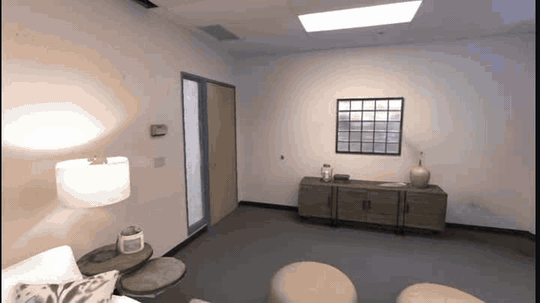
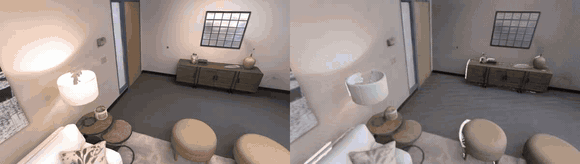
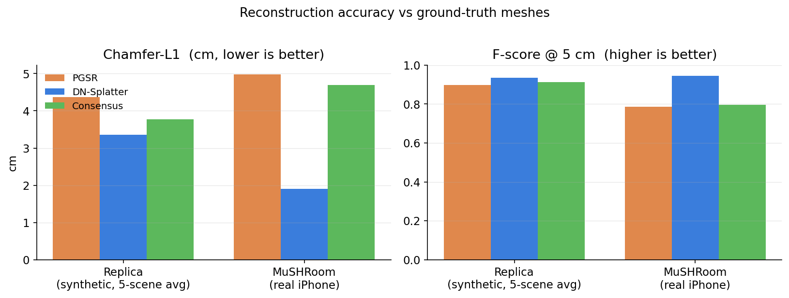
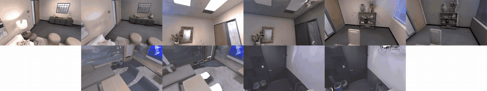
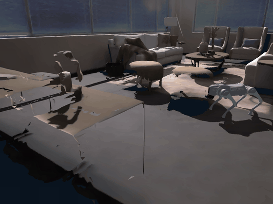
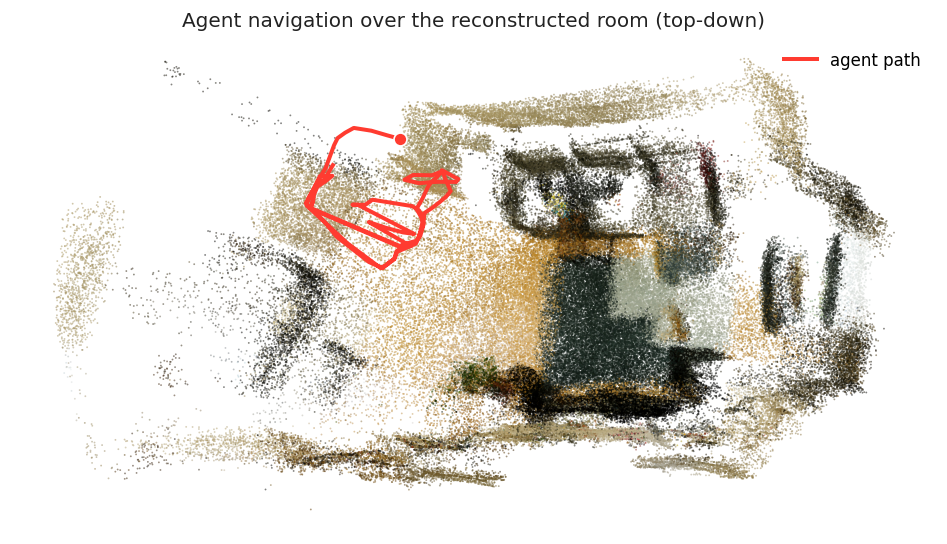

Phone video → metric 3D reconstruction → a room a robot can explore.

The full pipeline in one shot: phone capture → metric 3D reconstruction → a Go2 robot standing in the scanned room under physics.

Fidelity check on a benchmarked scene (Replica room0): original video (left) and our reconstruction (right), along the same path. Sub-centimetre accuracy against the ground-truth mesh.
PGSR · DN-Splatter · MonoSDF · the consensus fusion, aligned in one frame. Toggle to compare.
Open viewer →Our reconstruction toggled against the Replica ground-truth mesh (Chamfer 0.62 cm).
Open viewer →| Method | Accuracy ↓ | Completion ↓ | Chamfer-L1 ↓ | F-score ↑ |
|---|---|---|---|---|
| PGSR | 1.13 | 7.60 | 4.37 | 0.898 |
| DN-Splatter | 0.57 | 6.14 | 3.36 | 0.936 |
| Consensus (ours) | 1.07 | 6.47 | 3.77 | 0.913 |
5-scene average. Sub-centimetre accuracy. Full protocol + per-scene table in the repo's docs/BENCHMARK.md.

Chamfer-L1 (lower is better) and F-score@5cm (higher is better) across the three methods, on the Replica average and on a real iPhone capture.

All five benchmark scenes, input video (left) vs reconstruction (right) along the same path. Top: room0, room1, room2; bottom: office0, office1.


Left: a Go2 quadruped traverses the phone-scanned room in Genesis at metric scale (fixed camera, planned path with a trot gait; a kinematic traversal, since physics-driven locomotion needs a trained policy). Rigid-body physics is validated separately: a dropped object rests on the floor within 2 cm. Right: the same mesh as a Habitat navmesh with a recorded agent trajectory. See scripts/genesis/ and docs/PHASE2_GENESIS.md.
Repo & full write-up on GitHub — see the repo, docs/ARCHITECTURE.md, and docs/BENCHMARK.md.